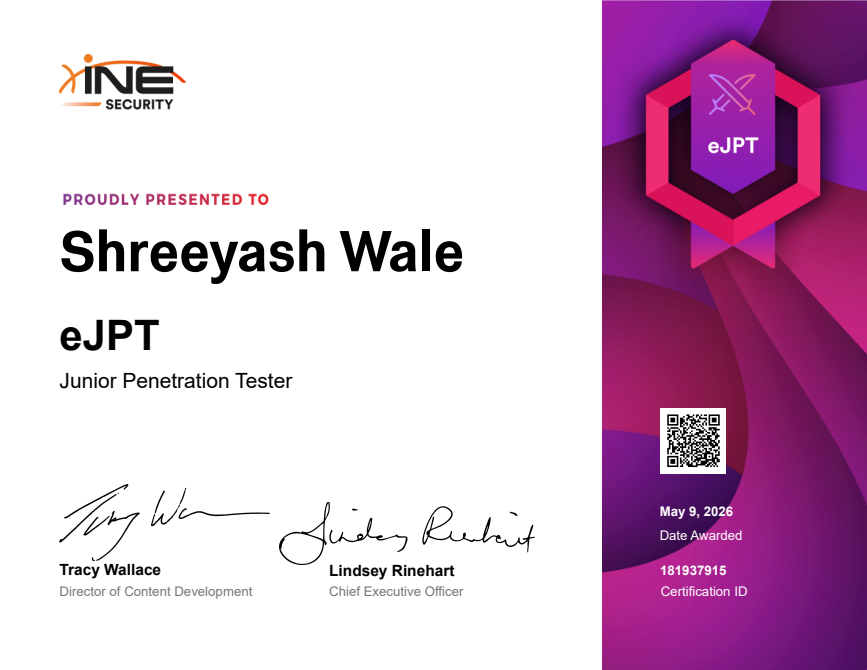
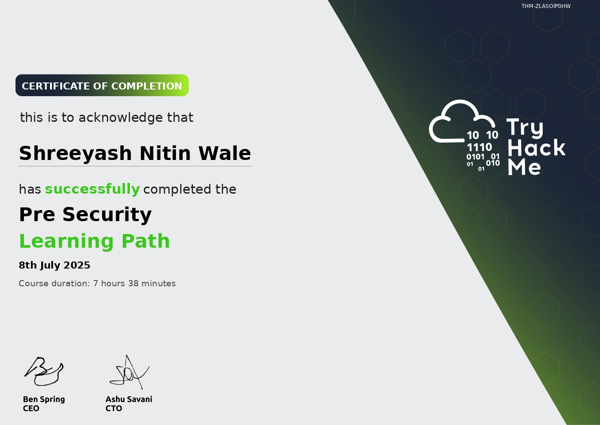
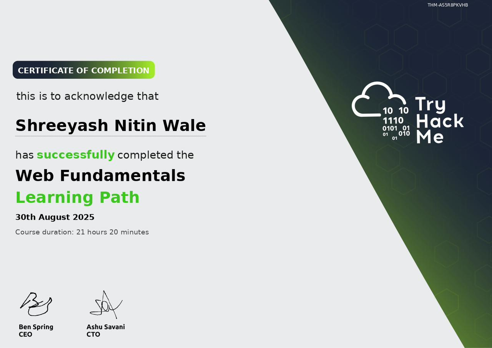

Evidence over assumption
Make findings traceable and decisions explainable.
Cybersecurity / GRC
I’m Shrey, a cybersecurity professional working across governance, risk, compliance, and technical security—turning controls into evidence and risk into clear decisions.
I focus on understanding how organizations are exposed, evaluating their security posture, and mapping practical controls to recognized frameworks. The goal is straightforward: make security measurable, defensible, and useful to the people making decisions.
My technical work keeps that perspective grounded—from Windows configuration assessment and evidence collection to Python tooling and security testing on Linux.
Make findings traceable and decisions explainable.
Understand the risk before prescribing the response.
Communicate security in language people can act on.
WINDOWS DESKTOP / OPEN SOURCE
SecureAudit runs an approved catalogue of PowerShell checks, captures structured evidence, calculates score and coverage, stores scan history in SQLite, and produces standalone HTML reports.
Mapping policies, processes, and evidence to security objectives and industry frameworks.
Identifying exposure, assessing control effectiveness, and translating findings into priorities.
Testing technical configurations and documenting results with defensible evidence.
Building focused Python and PowerShell tools that make repeatable assessment possible.
Credentials that support my technical and risk-focused security practice.

INE SECURITY
CERTIFIEDA hands-on certification covering the penetration-testing lifecycle, network and host assessment, and web application testing.

TRYHACKME
COMPLETEDCompleted the guided foundational security learning path with 7 hours and 38 minutes of coursework.

TRYHACKME
COMPLETEDCompleted the practical web-security fundamentals learning path with 21 hours and 20 minutes of coursework.
OPEN CHANNEL / LET’S TALK